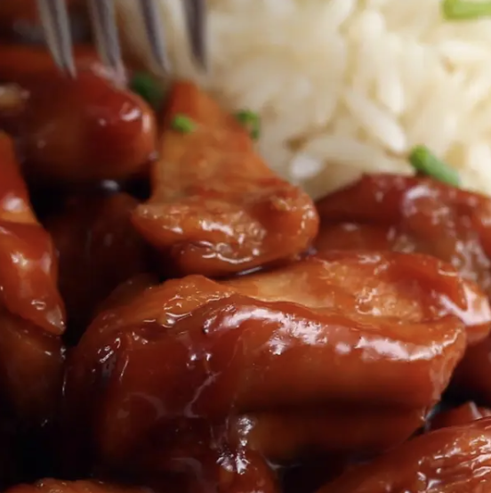

Teriyaki Chicken

Soft tender tasty chicken
This protein rich 3 ingredient recipe can be done in 12 minutes
Ingredients List
- 2lb chicken thighs
- One cup soy sauce
- 0.5 cup brown sugar
Recipe steps
- Sear the chicken thighs evenly in a pan, then flip
- Add the soy sauce and brown sugar, stirring and bringing to a boil
- Stir until the sauce has reduced and evenly glazes the chicken and serve with rice if desired